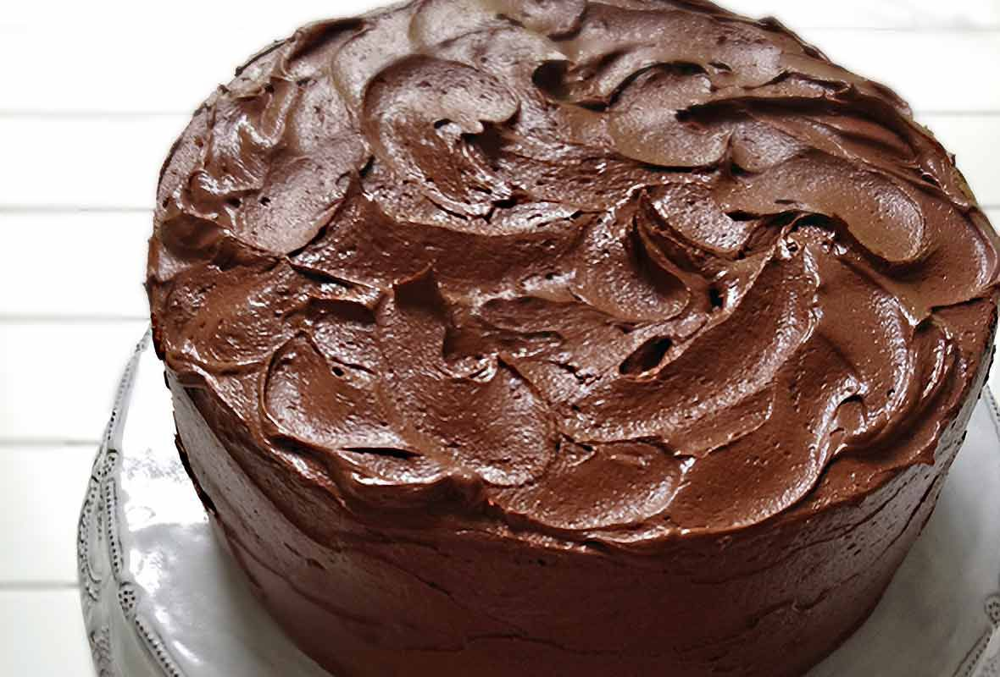

Chcolate cake

Description
yummy chocolate if you like chocolate then you like chocolate cake
Ingriedients
FOR THE CAKE
- 2 cups all-purpose flour, spooned into measuring cup and leveled off with knife
- 2 cups granulated sugar
- 1 cup unsweetened natural cocoa powder, such as Hershey’s
- 1 teaspoon salt
- 2 teaspoons baking powder
- 1 teaspoon baking soda
- 2 large eggs, lightly beaten
- ½ cup vegetable oil
- 1 cup sour cream
- 1½ teaspoons vanilla extract
- 1 cup boiling water
FOR THE FROSTING
- 8 ounces semi-sweet or milk chocolate, broken into small pieces (see note)
- 2½ sticks (20 tablespoons) unsalted butter, softened but still cool
- 1¼ cups confectioners' sugar
- ½ cup unsweetened natural cocoa powder, such as Hershey’s
- ⅛ teaspoon salt
- ¾ cup light corn syrup
- 1 teaspoon vanilla extract
steps
FOR THE CAKE
- Position a rack in the center of the oven and preheat the oven to 350°F (180°C). Lightly butter the bottom of two 9-inch (23-cm) round cake pans. Line the bottoms of the pans with parchment paper, and then butter and flour the parchment and the sides of the pans. (Alternatively, replace the butter and flour with nonstick cooking spray with flour, such as Baker’s Joy or Pam with Flour.)
- In the bowl of a stand mixer fitted with the paddle attachment, combine the flour, sugar, cocoa powder, salt, baking powder, and baking soda. Mix on low speed for 30 seconds to combine. Add the eggs, oil, sour cream, and vanilla and mix on low speed until combined.
- Increase the speed to medium and beat for 2 minutes. Then, reduce the speed to low and gradually pour in the hot water (be careful to pour very slowly so it doesn’t splash). The batter will be soupy. Stop the mixer and scrape down the sides and bottom of the bowl; mix again until evenly combined.
- Divide the batter evenly between the prepared cake pans. Bake for about 35 minutes, or until a toothpick inserted into the center comes out clean. While the cake is baking, prepare the frosting.
- Cool the cake layers in the pans on a rack for 10 minutes. Invert the cakes onto a wire rack, remove the pans and cool completely. When the cakes have cooled, place one cake layer on a serving plate. Using an icing spatula or butter knife, spread about ¾ cup of the frosting over the first layer. Top with the second layer, then spread the remaining frosting over the top and sides of the cake, swirling decoratively. The cake is best enjoyed fresh on the day it is made, but it will keep for 2 to 3 days stored in a cake dome at room temperature.
FOR THE FROSTING
- Place the chocolate in a microwave-safe bowl and cook in the microwave in 20-second intervals, stirring in between, until it's about three-quarters of the way melted. Stir, allowing the residual heat in the bowl to melt the remaining chocolate completely. (If necessary, place the chocolate back in microwave for a few seconds.) Set aside to cool.
- In a food processor, process the butter, confectioners’ sugar, cocoa powder and salt until smooth, about 30 seconds, scraping down the sides of the bowl as needed. Add the corn syrup and vanilla and process until just combined, 5 to 10 seconds. Scrape down the sides of the bowl, then add the lukewarm melted chocolate and pulse until smooth and creamy, 10 to 15 seconds. Do not overmix.
- The frosting can be used immediately or held at room temperature for 3 to 4 hours. It may lose its shine as it sits—to bring the shine back, run a metal spoon under hot water, then wipe dry with a towel; stir the frosting with the hot spoon and it should shine right up.
- Note: If making this cake for children, I recommend using milk chocolate for the frosting (Hershey or Lindt milk chocolate bars work well). Semi-sweet chocolate will lend a more intense chocolate flavor (Ghirardelli bars for baking are ideal).
link back to main page